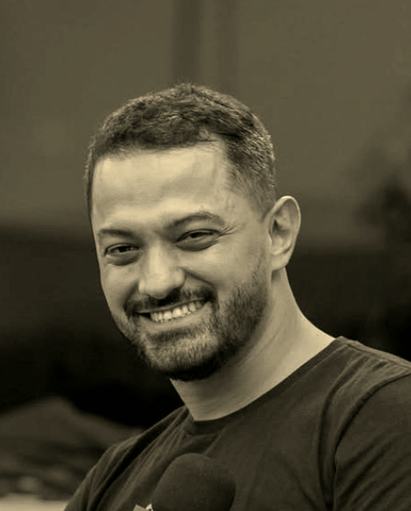

O quarto
Comecei no quarto da minha casa, sem investimento externo. Convenci meus sócios a entrar num projeto que, na época, não tinha nada. O que existia era a vontade de construir algo relevante, que reunisse pessoas.

O próximo ciclo do seu negócio começa em você. Ajudo empreendedores e líderes a transformar experiência e relações em crescimento, com clareza sobre o que construir e o impacto que querem deixar.
Quando tudo pede atenção, fica difícil saber onde agir. A mentoria começa pelos desafios que você vive hoje e pelo que precisa mudar para o negócio seguir crescendo.
Tudo parece urgente. O que vem primeiro?
Escolher o que merece seu tempo e seu investimento, e o que pode esperar.
Você faz cada vez mais. O resultado acompanha?
Encontrar onde tempo, dinheiro e energia se perdem e testar formas mais simples de trabalhar.
Há bons clientes. Como crescer com eles?
Criar motivos para as pessoas voltarem, indicarem sua empresa e construírem parcerias com você.
Ele se chamava Involves.
Comecei no quarto da minha casa, sem investimento externo. Convenci meus sócios a entrar num projeto que, na época, não tinha nada. O que existia era a vontade de construir algo relevante, que reunisse pessoas.
Por dez anos, construí produto, vendas, grandes contas, cultura e expansão internacional. Construímos uma comunidade em torno do trade marketing, e ela nos deu escala, posicionamento e autoridade.
A receita foi de R$ 2,4 milhões em 2014 a R$ 18 milhões em 2017, com capital próprio: R$ 37,2 milhões somados em quatro anos. Em 2016, fomos o 1º lugar no GPTW Brasil em Tecnologia, entre as pequenas empresas.
Em 2018, a Involves seguiu para um novo ciclo de gestão, presente em 17 países. Eu segui para outra busca.
“Depois de muitos anos perseguindo crescimento, hoje me interessa cada vez mais compreender o que faz um crescimento valer a pena.”
Passei por processos de autoconhecimento, como a Busca da Visão, e voltei com outra pergunta sobre negócios.
Hoje transformo o que vivi em método. Do Gigante do PDV às Rodas de Liderança, cultivo comunidades. E ajudo empreendedores e líderes a cultivar o próximo ciclo dos seus negócios.
Largura dos anéis de 2014 a 2017 proporcional ao faturamento anual da Involves. Fonte: série pública em rodrigolamin.com.br/involves.
Toda essa experiência me fez entender que uma empresa não é uma máquina. É um organismo vivo. Na Involves, eu não construí só um produto: apliquei um jeito de cultivar pessoas, relações e comunidade. Depois de anos perseguindo crescimento, fui à natureza entender o que faz um crescimento valer a pena. Foi lá que esse jeito ganhou nome:
A natureza sabe crescer. O que podemos aprender com ela?
Biomimética é aprender com a natureza para resolver desafios. Na Metodologia Árvore do Cultivo (MAC), uso esse olhar para trabalhar decisões do seu negócio: cuidar da base, usar bem os recursos e fortalecer relações.
Sua história, suas convicções, suas forças e o que faz seus olhos brilharem. O negócio começa em uma pessoa.
Uma leitura do negócio, das relações e do ambiente para escolher prioridades e transformar estratégia em ação.
Resultados que sustentam o negócio e se transformam em novas sementes de valor para outras pessoas.
Uma árvore depende de suas raízes. No negócio, olhamos para o valor que você entrega, seus clientes e o que mantém a empresa de pé.
Crescer depende do ambiente. Por isso, analisamos sua equipe, seus recursos e as relações que ajudam ou dificultam o trabalho.
A natureza se adapta às condições ao redor. No negócio, testamos ações, acompanhamos os resultados e ajustamos o caminho.
Olhamos para como você vende, quem compra e onde estão os principais obstáculos. Escolhemos uma prioridade e um primeiro passo possível.
O que mais precisa da sua atenção agora?
Identificamos o que sua empresa faz bem e o valor que entrega. Isso orienta sua oferta, sua comunicação e as decisões sobre o que manter ou mudar.
Por que um cliente escolhe a sua empresa?
Olhamos para a rotina, o tempo e os recursos da equipe. Buscamos o que pode ser simplificado para que as pessoas trabalhem melhor juntas.
O que está ajudando ou atrapalhando o seu crescimento?
Pensamos em formas de aproximar clientes, parceiros e pessoas da sua rede. Trocas e ações em conjunto podem abrir novas oportunidades para o negócio.
Com quem você pode construir algo melhor?
Acompanhamos sinais simples: novas vendas, clientes que voltam, indicações e custos. Assim, você decide com mais clareza o que merece continuar.
O que mudou depois das ações que você colocou em prática?
O que funcionou pode ser repetido e melhorado. O que não funcionou ajuda a fazer novas escolhas. Cada ação traz aprendizado para o próximo passo.
O que vale repetir, melhorar ou deixar para trás?
Quatro gestos que se repetem a cada ciclo, com a humildade de quem aprendeu na montanha que sempre há mais para aprender.
A biomimética observa sistemas vivos para compreender estratégias desenvolvidas pela vida ao longo do tempo. O método não tenta fazer uma empresa parecer com a natureza: usa essa inteligência para pensar crescimento, adaptação e prosperidade.
Árvores trocam carbono por redes de fungos micorrízicos no solo. Em campo, bétulas e abetos-de-douglas trocaram carbono através dessas conexões.
No negócio: a comunidade como sistema de troca, não como canal.
A vida integra desenvolvimento e crescimento: se auto-organiza, constrói de baixo para cima e combina componentes modulares.
No negócio: raízes e solo antes da copa.
Organismos prosperam quando estão sintonizados com o ambiente local e respondem a ele.
No negócio: ler clientes, canais e relações antes de decidir como crescer.
Você pode aplicar esse olhar com acompanhamento na mentoria, viver uma experiência na natureza ou se aproximar de outros empreendedores.
Traga os desafios da sua empresa. Juntos, escolhemos prioridades, definimos ações e acompanhamos o que acontece. Você aplica no dia a dia e conta comigo para pensar, revisar e avançar.

Saia da rotina. Pense com mais clareza. Uma experiência na natureza, em Urubici, para olhar para você e seu negócio.
Conhecer a experiênciaDo Gigante do PDV às Rodas de Liderança, reúno pessoas para compartilhar desafios, aprender com experiências reais e construir parcerias. Uma rede para trocar e seguir aprendendo.
Conhecer a comunidade1.300metros
ALTITUDE, a imersão dos cultivadores: quatro dias para sair do ritmo da operação, olhar para quem conduz o negócio e voltar com clareza sobre as próximas escolhas.
Condição inaugural R$ 7.850 · para os 7 primeiros, hospedagem e alimentação incluídas
Numa floresta, as árvores trocam nutrientes pelas raízes, através de uma rede de fungos que ninguém vê. Do Gigante do PDV às Rodas de Liderança, é essa rede que eu cultivo: espaços de encontro, troca e aprendizado.
Um negócio pode gerar renda, abrir oportunidades e melhorar a vida de quem está por perto. Quero ajudar você a crescer cuidando dessas relações.
Rodrigo Lamin
É para empreendedores e líderes que já têm um negócio ou uma equipe para conduzir e querem mais clareza para decidir e crescer. Na primeira conversa, entendemos seu desafio e avaliamos juntos se a mentoria pode ajudar.
Não. Eu explico as ideias com exemplos simples e ajudo você a relacioná-las ao seu negócio. O ponto de partida é o que você já vive: clientes, vendas, equipe, tempo e dinheiro.
Uma árvore precisa de uma base forte e de boas condições para crescer. Esse olhar nos ajuda a examinar o negócio: o que sustenta as vendas, onde faltam recursos e quais relações precisam de cuidado. A partir daí, escolhemos ações e acompanhamos os resultados.
Clique no botão e me conte pelo WhatsApp o que você quer melhorar no seu negócio. Vamos entender seu momento e conversar sobre como posso ajudar. Você decide se quer seguir, sem compromisso de contratação.
Me conte o que está acontecendo e o que você quer melhorar. Vamos conversar sobre como a mentoria pode ajudar você a escolher o próximo passo.
Diretamente comigo, pelo WhatsApp. Sem compromisso de contratação.